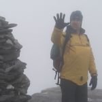
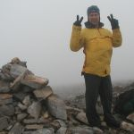
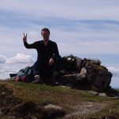
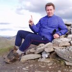
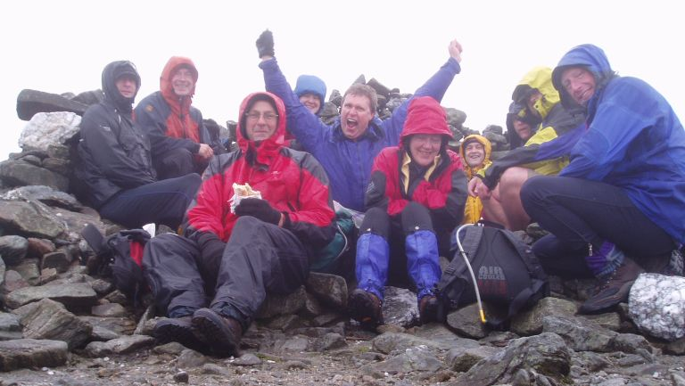

Last Updated: Mon Apr 29 17:32:08 BST 2013
Jim's Final Munro
I have finished the Munros ...
19 years, 7 months and 21 days after I first reached the summit of
Cairn Gorm
I completed my round of the
Munros, and became a Munroist,
on 19th May 2007 when I reached the summit of
Ben Chonzie.
The weather was foul, but 9 of my friends joined me on the summit to celebrate.
I have been assigned Munroist Number
#3806
by the
SMC.
 |
 |
|
 |
 |
 |
Inset 1: 2nd April 2007: 5 to go, Sgurr Mor, Fannichs.
Inset 2: 2nd April 2007: 4 to go, Beinn Liath Mhor Fannaich, Fannichs.
Inset 3: 4th April 2007: 3 to go, Ben Avon, Cairngorms.
Inset 4: 15th May 2007: 2 to go, Beinn Bhuide, Loch Fyne.
Inset 5: 15th May 2007: 1 to go, Beinn an Lochain, Arrochar.
Main Photo: 19th May 2007: Final Munro, Ben Chonzie, Comrie.
Some Statistics
These figures are for walks to bag the 3000ft peaks of Britain and Ireland,
so they include all peaks in Scotland, Wales, Ireland and England.
- First Munro: Cairn Gorm, 28th September 1987
- Final Munro: Ben Chonzie, 19th May 2007
- Elapsed Time: 19 years, 7 months, 21 days
- Total Number of Walks: 148 (over 169 days, on 41 trips)
- Total Distance Walked: 1788 miles
- Total Number of Peaks Ascended: 331 (18 reascents, plus around 128 tops)
- Number of Peaks Ascended Solo: 16 (over 11 walks)
- Pairs of Boots Used: 6 (of which 2 are still servicable)
Links
All information on this site is copyright © 1994-2020 Jim Randell